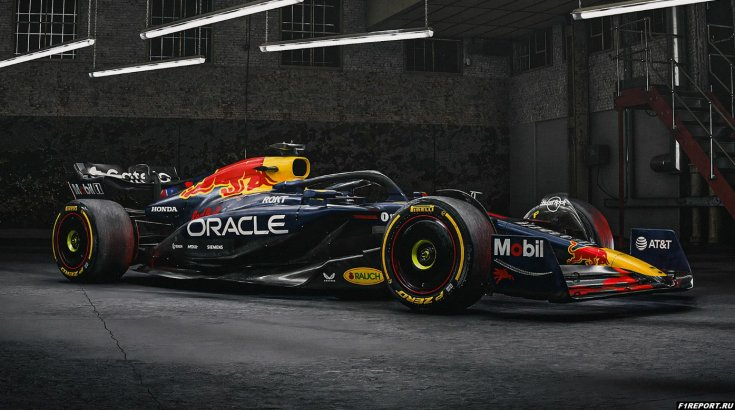

Настоящее и будущее — сезон 2026 года
Новая техническая революция
Сезон 2026 года, стартовавший в марте в Австралии, открыл одну из самых масштабных технологических реформ в истории Формулы-1. Это, пожалуй, самые comprehensive изменения за всю историю, затрагивающие двигатели, шасси, аэродинамику и топливо.
Силовая установка 2026
Новые гибридные двигатели сохранили 1,6-литровую V6 конфигурацию, но архитектура кардинально изменилась. Из конструкции убрали сложный и дорогой мотор-генератор MGU-H, оставив только MGU-K. Это решение приняли для привлечения новых производителей, и оно сработало — Audi, General Motors, Ford присоединились к F1, а Honda вернулась.
Самое важное изменение — распределение мощности. Если ранее на долю электрической части приходилось около 20%, то теперь соотношение двигателя внутреннего сгорания и электромотора составляет примерно 50 на 50. Электрическая мощность выросла до 350 кВт (около 470 л.с.) — в три раза больше прежнего, при том же размере батареи. Это требует совершенно иного подхода к управлению энергией.
Активная аэродинамика и новое шасси

Инженеры полностью переработали архитектуру кузова. Впервые в истории в регламент официально введена активная аэродинамика: переднее и заднее крылья могут менять угол во время движения. На прямых участках элементы крыльев раскладываются почти горизонтально, минимизируя сопротивление воздуха (режим «straight mode»), а в поворотах возвращаются в положение для создания максимальной прижимной силы.
Общий уровень прижимной силы снизится на 30%, а сопротивление воздуха — на 55% по сравнению с машинами 2025 года. Шины стали уже на 25 мм спереди и 30 мм сзади, а минимальный вес болидов уменьшен с 800 до 768 кг. Колесная база сократилась на 200 мм, а ширина — на 100 мм, что сделает машины более маневренными на узких трассах.
Управление энергией и новые режимы
Из-за возросшей роли электричества пилоты теперь управляют не только скоростью, но и сложной стратегией расхода энергии. Привычная система DRS (Drag Reduction System) ушла в прошлое. Её заменил режим «Manual Override»: догнав соперника менее чем на секунду, пилот может получить дополнительный электрический буст от MGU-K. Также доступен режим «Boost Mode» для атаки или защиты.
Ещё одно важное новшество — переход на полностью синтетическое топливо (e-fuels), производимое из углекислого газа и водорода без использования ископаемой нефти. Это должно значительно снизить углеродный след чемпионата.
Взгляд в будущее

Новый регламент 2026 года призван решить главную проблему современных гонок — сложность обгонов из-за турбулентного воздуха. Более плоское днище (отказ от граунд-эффекта в пользу «ступенчатой» аэродинамики) и активные крылья должны позволить машинам легче следовать друг за другом. Пилот McLaren Оскар Пиастри отмечает, что новые машины дают пилотам больше свободы в управлении и требуют иного стиля пилотирования по сравнению с предшественницами.